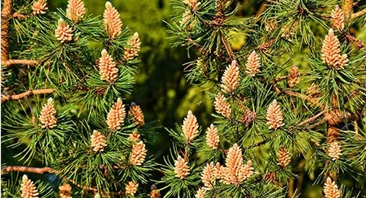

In contrast to most Angiosperms, Gymnosperms (from Greek, gym means “naked” and sperm means “seed”) do not have flowers. Gymnosperms are plants that produce their seeds in cones.
Conifers are (by far) the most common type of gymnosperm. Conifers are woody plants with needles (as shown in the picture above). Conifers include: cedars, firs, cypresses, junipers, kauri, larches, pines, hemlocks, redwoods, spruces, and yews.
Life Cycle of Gymnosperms. A mature gymnosperm tree generally has both female and male cones.
What we call pine cones (shown in the pictures below) are the tree's female reproductive organs. In a mature pine cone, egg cells are formed at the base of the scaly leaf-like structures (near the center of the cone). (The pinkish areas in the middle picture below show about where the eggs are.)
Gymnosperms also have male pollen-producing organs (pollen cones, shown below), which are soft and form in clusters. The male cones are in general located lower on the tree than female cones. This makes it more likely that the wind blows pollen to different trees, fertilizing their eggs. (This is a good thing because it causes genetic diversity.) Pollen that lands near an egg between the scaly leaves of a mature female pine cone will form a tunnel to the center of the egg and fertilize it.



***Note for Teachers: You can access more information about this website and find other resources for science inquiry on the ISP Tutor website.
©2021 Klahr Lab, Carnegie Mellon University. All Rights Reserved
Carnegie Mellon University | Dept. of Psychology | 5000 Forbes Ave. | Pittsburgh, PA 15213 The TED project was funded in part by the Institute of Education Science (IES), Grant R305H060034, and in part by the National Science Foundation, Grant SBE035442. The ISP Tutor project is funded by IES, Grant R305A170176.
The research reported here was supported by the Institute of Education Sciences, U.S. Department of Education, through Grant R305A170176 to Carnegie Mellon University. The opinions expressed are those of the authors and do not represent views of the Institute or the U.S. Department of Education.